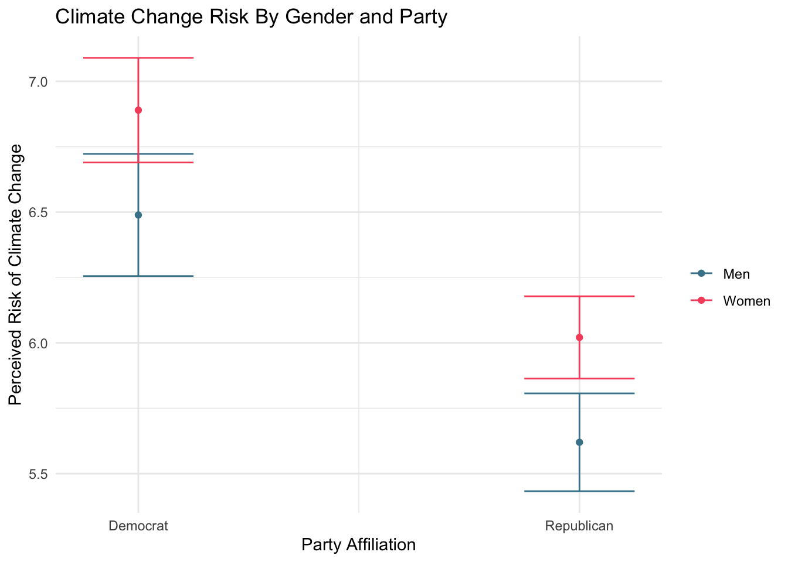
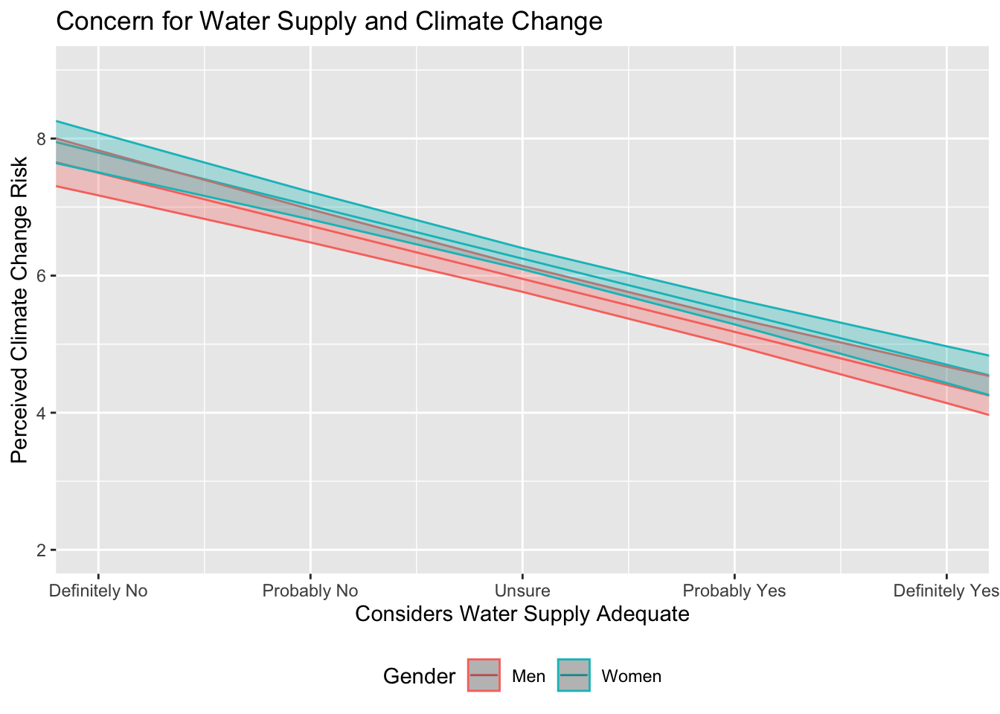

15 Appendix: Guide to Data Visualization
Throughout these labs, we have created numerous high quality data visualizations using our class data sets. While you can always use the code we have created there - it may even help refresh your memory on the data analysis skills you’ve learned - this guide is designed to be a quick, additional resource for the creation and customization of data visualizations using the Tidyverse and ggplot2.
These examples will use the class dataset to demonstrate how to add and customize elements of your data visualizations.
Note: While this quick guide is hopefully helpful, it is by no means complete. Remember that R and the Tidyverse packages are open source; you can always find help online, such as this Data Visualization Cheat Sheet from RStudio.
15.1 Deciding Which Visualization to Use
Remember - the type of data you are using matters for what kind of plot you make.
For Exploring a Single Variable
When you are first exploring your data, it is often helpful to visualize a single variable.
For continuous data, you may be interested in producing
- density curves (geom_density), or
- histograms (geom_histogram).
For discrete data, you will likely be using a bar plot (geom_bar or geom_col).
For Displaying Two (or more) Variables
After you get a feel for your data, you are likely then interested in visualizing their relationships. These examples are geared towards two variables (one x and one y), but you can always add more!
With a continuous x and a continuous y, you have numerous options available. The most common include:
- a scatter plot (geom_point + geom_jitter), and
- a function curve(geom_line or geom_smooth)
With a discrete x variable and a continuous y variable, you might produce:
- a bar plot (geom_bar or geom_col),
- a box blot (geom_boxplot), or
- a violin plot (geom_violin)
Note: While these are not your only options, they are some of the most commonly used (and match what we’ve covered in these labs!)
Once you have the basic plot made, the customization can begin. Below, we’ll cover how to add labels and titles, scale your axes, visualize error, add color, and using a theme.
15.2 Adding Labels
There are numerous ways to add titles and labels to your plot. The simplest is to use the functions:
\(+\) xlab(“X-Axis Title”), \(+\) ylab(“Y-Axis Title”), and \(+\) ggtitle(“Plot Title”)
15.3 Scale and Limits
You may also want to change the range of values that appear on either axis, as well as the number and nature of data breaks.
To set limits on the range of data that appears in your plot, you can use the function:
\(+\) coord_cartesian(ylim =, xlim =)
In essence, this allows you to “zoom in” on your data by specify the range of the x and y axes.
You may also want to change the number and nature of the breaks along your axes. For continuous data, you can use the functions: \(+\) scale_x_continuous(breaks =, labels = c()), and \(+\) scale_y_continuous(breaks =, labels = c())
Note: For discrete data, you will use these functions in the same way: \(+\) scale_x_discrete() \(+\) scale_y_discrete()
15.4 Visualizing Error
Often, you will need to include a representation of estimated error in your data visualizations. The primary ways to do this are through confidence intervals or error bars.
Confidence Intervals
To add confidence intervals to your function lines, you can use the geom_ribbon() function. The arguments for this function are:
\(+\) geom_line() \(+\) geom_ribbon(aes(ymin =, ymax =), alpha = )
Note: Specifying the alpha value here changes how opaque the confidence interval is.
Error Bars
With a discrete point, you will need error bars rather than confidence intervals. To include error bars on your plot, you can use the geom_errorbar() function. The necessary arguments include:
\(+\) geom_errorbar(aes(ymin, ymax), width =)
Note: Prior to using either of these functions, it helps to add the upper and lower limits of your confidence interval to your data frame. This can be done via the mutate function.
15.5 Adding Color
Adding color to your plots helps you distinguish between variables and categories. In the ggplot aesthetic, setting a variable to “color” or “fill” will automatically produce predefined color variations. However, these won’t always make sense with your data and you may want to specify your own.
Note: R allows you to use HEX color codes for customization. Color Brewer 2 is a great tool for picking out colors.
For setting the color of an individual variable, you can add the argument within the geom you are using. Here you will specify the desired color, rather than the variable. Remember that you use “color” for points and lines, and “fill” for columns and bars. For example,
\(+\) geom_point(color = “blue”), or \(+\) geom_col(fill = “red”)
Note: You can also specify the size and alpha here, too.
You may also want to add multiple colors to a plot. These functions allow yoou to specify your own mappings from levels in the data to color values.
\(+\) scale_colour_manual(values = c()) \(+\) scale_fill_manual(values = c())
15.6 Position Adjustments
When using multiple variables, you may often want to adjust their placement on the graph. Below are some common position adjustments you can use.
Arrange elements side by side
\(+\) geom_bar(position = “dodge”)
Stack elements on top of each other
\(+\) geom_bar(position = “stack”) or, \(+\) geom_bar(position = “fill”)
Note: “Fill” normalizes the height of the bars, while “stack” does not
Move labels away from data points
\(+\) geom_label(position = “nudge”)
15.7 Using Themes
Outside of the basic plot elements pertaining to your data, you can still further customize your plots by using themes.
A complete guide to the existing ggplot2 themes is available here. These primarily control the non-data display elements, which include the background shading and internal lines of the plot. Different themes may be best suited for different kinds of projects; you can even tweak the premade themes by adjusting their arguments.
Additionally, you can create and save your own custom theme for future use! Here is an example of a custom theme:
theme_custom <- theme_minimal() +
theme(plot.title = element_text(family="serif",
face = "bold",
hjust = .5,
size = 15),
axis.title = element_text(family = "serif",
face = "bold",
size=15),
axis.text = element_text(family = "serif",
face = "bold",
color = "black"),
panel.grid = element_line(color = "grey75"),
legend.background = element_rect(color = "grey94",
fill = "grey94"),
legend.text = element_text(family = "serif",
face = "bold",
size = 9),
legend.title = element_text(family = "serif",
face = "bold",
size = 9),
legend.title.align = .5)15.8 Putting it All Together
Below, we have created three plots to provide an example of how these visual elements might all interact.
First, we will establish a subset of the class dataset to use for the examples.
#create the model
lm1 <- lm(glbcc_risk ~ party + f.gender, data = sub.ds)
lm1 %>%
augment(newdata = data.frame(party = 1:2,
f.gender = "Men")) -> fit1.m
lm1 %>%
augment(newdata = data.frame(party = 1:2,
f.gender = "Women")) -> fit1.w
fit1.df <- full_join(fit1.m, fit1.w)## Joining, by = c("party", "f.gender", ".fitted", ".se.fit")## Warning: Column `f.gender` joining factors with different levels, coercing
## to character vector#visualize the model
ggplot(fit1.df, aes(party, .fitted, color = f.gender)) +
geom_point(stat = "identity", position = position_dodge(width = 0)) +
scale_x_continuous(breaks = 1:2, labels = c("Democrat", "Republican")) +
geom_errorbar(aes(ymin = .fitted - 1.96 * .se.fit,
ymax = .fitted + 1.96 * .se.fit), width = 0.25) +
scale_colour_manual(name="", values =c("#468499", "#f6546a")) +
ylab("Perceived Risk of Climate Change") +
xlab("Party Affiliation") +
ggtitle("Climate Change Risk By Gender and Party") +
labs(color="Gender") +
scale_fill_discrete(guide=FALSE) +
theme_minimal()
#creating the model
lm2 <- lm(glbcc_risk ~ wtr_comm + f.gender, sub.ds)
lm2 %>%
augment(newdata = data.frame(wtr_comm = 0:10,
f.gender = "Women")) -> fit2.w
lm2 %>%
augment(newdata = data.frame(wtr_comm = 0:10,
f.gender = "Men")) -> fit2.m
fit2.df <- full_join(fit2.w, fit2.m)## Joining, by = c("wtr_comm", "f.gender", ".fitted", ".se.fit")## Warning: Column `f.gender` joining factors with different levels, coercing
## to character vectorfit2.df <- fit2.df %>%
mutate(up = .fitted + 1.96 * .se.fit,
low = .fitted - 1.96 * .se.fit)
#visualizing the model
fit2.df %>%
ggplot(., aes(x = wtr_comm, y = .fitted, color = f.gender)) +
geom_line() +
geom_ribbon(aes(ymin = low, ymax = up, fill = f.gender), alpha = .3) +
coord_cartesian(ylim = c(2, 9), xlim = c(1, 5)) +
scale_x_continuous(breaks=c(1, 2 ,3 ,4 ,5), labels=c("Definitely No",
"Probably No", "Unsure",
"Probably Yes", "Definitely Yes")) +
theme(legend.position = "bottom", legend.direction = "horizontal") +
ggtitle("Concern for Water Supply and Climate Change") +
xlab("Considers Water Supply Adequate") +
ylab("Perceived Climate Change Risk") +
labs(color="Gender") +
scale_fill_discrete(guide=FALSE)
lm3 <- lm(glbwrm_risk_fed_mgmt ~ ideol * glbcc_risk, data = sub.ds)
lm3 %>%
augment(newdata = data.frame(ideol = 1, glbcc_risk = seq(1, 10, 1))) -> id1
lm3 %>%
augment(newdata = data.frame(ideol = 2, glbcc_risk = seq(1, 10, 1))) -> id2
lm3 %>%
augment(newdata = data.frame(ideol = 3, glbcc_risk = seq(1, 10, 1))) -> id3
lm3 %>%
augment(newdata = data.frame(ideol = 4, glbcc_risk = seq(1, 10, 1))) -> id4
lm3 %>%
augment(newdata = data.frame(ideol = 5, glbcc_risk = seq(1, 10, 1))) -> id5
lm3 %>%
augment(newdata = data.frame(ideol = 6, glbcc_risk = seq(1, 10, 1))) -> id6
lm3 %>%
augment(newdata = data.frame(ideol = 7, glbcc_risk = seq(1, 10, 1))) -> id7
full_join(id1, id2) %>%
full_join(., id3) %>%
full_join(., id4) %>%
full_join(., id5) %>%
full_join(., id6) %>%
full_join(., id7) -> fit3.df## Joining, by = c("ideol", "glbcc_risk", ".fitted", ".se.fit")
## Joining, by = c("ideol", "glbcc_risk", ".fitted", ".se.fit")
## Joining, by = c("ideol", "glbcc_risk", ".fitted", ".se.fit")
## Joining, by = c("ideol", "glbcc_risk", ".fitted", ".se.fit")
## Joining, by = c("ideol", "glbcc_risk", ".fitted", ".se.fit")
## Joining, by = c("ideol", "glbcc_risk", ".fitted", ".se.fit")#create a color scale
col_scale<-colorRampPalette(c("#0200bd50","#FF000050"))(7)
#visualizing the model
ggplot(fit3.df, aes(glbcc_risk, .fitted, color = as.factor(ideol))) +
geom_line(size = 2) +
scale_color_manual(values = c(col_scale[1], col_scale[2], col_scale[3],
col_scale[4], col_scale[5], col_scale[6], col_scale[7]),
labels = c("1", "2", "3", "4", "5", "6", "7"),
name = "Ideology") +
ggtitle("Federal Climate Change Management by Ideology") +
xlab("Climate Change Risk") +
ylab("Preferred Level of Federal Involvement") +
theme_bw()
There are an infinite number of ways you might use these (and more) elements to customize your own data visualizations. Have fun with it!